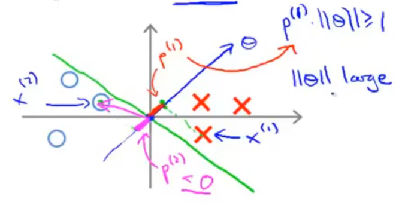
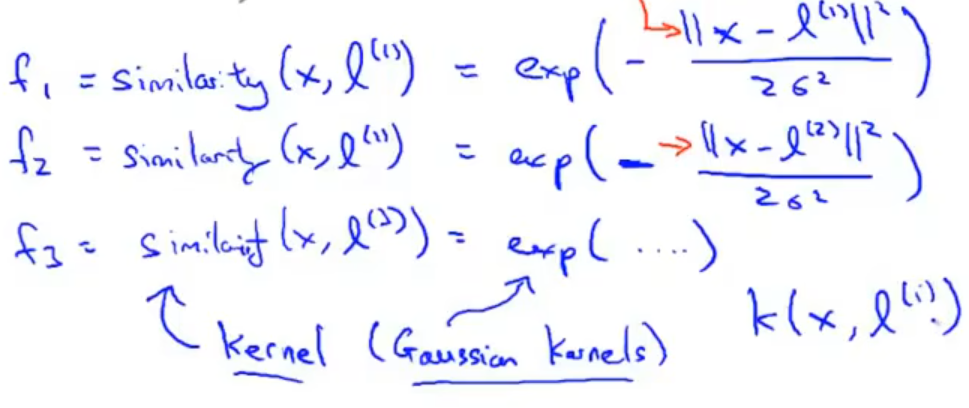
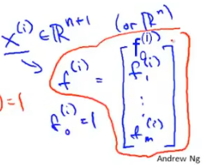
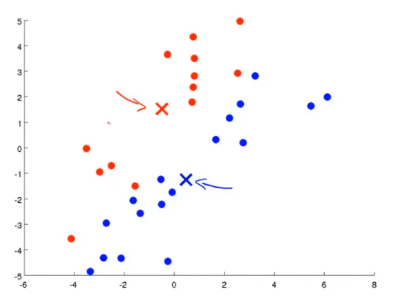
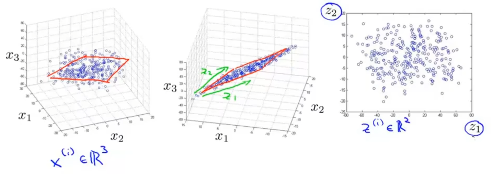
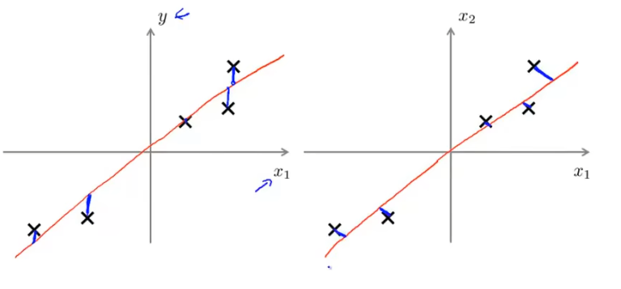

MechineLearning 基础学习笔记
0. 前言
说实话，本来没想学的，但是都在说ML是DL的基础，但是我直接学的DL，感觉自己可能对里面的一些基础知识有点错误的理解，来补补课吧。老样子，同样是以吴恩达的机器学习的课程为基础，能够尽可能的查缺补漏，开始下一阶段的学习。
同样，会采用认知-实践-再认知的路径加深基础扎实程度，那就开始吧。
1. 任务与学习分类
在任务上，机器学习针对两种任务：
一种为回归任务，简而言之，就是函数拟合，给定一组离散的数据集，例如苹果的重量与价格，并在全国的5w个市场调研，统一出一个数据集，回归任务的作用就是拟合出一个最优曲线，后续使用这个曲线对苹果价格进行预估。
一种是分类任务，我们在深度学习课程中学到的第一个任务就是分类任务，例如logistic回归，就不再赘述。
同样的在学习类型上，也分为两种：
一种是监督学习，在DL课程中，我们学到的第一个例子，数据集采用的是（x，y）作为输入，x是照片，y是是否为猫。模型通过给定的正确答案，去学习人类的认知，这叫监督学习，我们要输入正确答案。
一种是无监督学习，就像Dino，是一个把image放进去，他自己就能将物体进行自主的聚类，尽管他不知道这是什么东西，我们也不告诉他，他仍旧能够分清，这一坨是一个物体，那一坨是一个物体。这叫无监督学习，我们没有输入正确答案。
2. 非神经网络的监督学习方法
2.1 SVM 支持向量机的代价函数
实际上，SVM的推导在吴恩达来讲是从logistics回归的cost function开始的，我们考虑到监督学习输入样本的y值，可以区分出cost function的两种函数形态，当输入为1时，函数为左图，输入0时函数为右图。


而SVM要做的就是把这两个复杂的表达式转换为线性的表达式，用函数形态来逼近就是这样的两个图：

同时，替换了原代价函数上正则化系数λ，放了一个C系数在代价函数上，因此SVM的代价函数的数学表达就如下：

有时，SVM也被称作大间隔分类器：

考虑这样一个例子，这是一个小间隔分类器，顾名思义就是决策边界和样本之间的距离太小了。这样一个例子就可以证明为什么SVM是一个大间隔分类器，首先考虑SVM的优化目标：

上面的式子也可以写成θ的范数，就是下面这个θ长度。因此，在这个小间隔情况下，样本向量投影到决策系数向量的投影长度都极小，可以从图看出来，如果长度极小，这就要求θ的范数要尽可能的大，才能保证不等式是成立的，但是一旦这样做，就不可能使得θ的范数达到最小值。
因此SVM会保证自己尽可能的大间隔分类样本，以达到p较大，而决策系数向量范数达到较小值。
2.2 Kernel 核函数
核函数的诞生是为了解决特征多项式中选择特征的多样化与不确定性，在这里，吴恩达构建核函数的方式是采用高斯核函数，其流程如下：
自主选择分类图中的三个点作为landmark，随后，对于每个输入点，都有三个相似度，分别对应三个landmark。

我们就考虑这三个特征构成的特征多项式：

当输入的x接近选中的landmark时，我们可以说两个向量的特征相似度很高，几乎为1，例如粉色的点，那么f1为1；又因为离其他两个很远，所以其他两个为零，就推推导了这个式子为0.5，大于0，是一个分类。
同时，我们对于浅蓝色的点，由于离三个landmark都很远，因此三个f全为0，整个式子就不满足条件，因此又是一个分类，因此如果我们只看f1，f2，就能推测出一个决策边界，如红线所示。

吴恩达给出了一种选择landmarks的方式，就是使所有的训练样本（x,y）中的x成为landmark，例如：

然后轮询输入的特征值，遍历这个点与其他所有点的相似度，f1到fm，构建一个特征向量。其中f0定义为1，因此特征向量就是一个m+1行的列向量。

因此，我们就可以使用这个特征向量作为原本的输入样本的替代：

其中，不同的σ和λ对于整个模型的结果的影响如下：

回顾一下方差和偏差的区别吧。
若训练集错误率为1%，而验证集错误率为11%，那么可以说模型的拟合程度较好，但准确率较低，这样的情况是高方差（High variance）
若训练集的错误率为15%，验证集为16%，那么这样的情况就说明模型的拟合程度很差，导致准确率不高，这样就说是高偏差（High bias）
若训练集的错误率为15%，验证集为30%，那么这样的情况就说明模型的训练情况烂完了，这样就说是高偏差和高方差。
那么相对于logistic回归（神经网络），SVM的优势区间在哪里？

如果训练样本数小于特征数，那么使用神经网络或者没有kernel的SVM
如果训练样本数有限的多，那么使用高斯核为kernel的SVM
如果训练样本数过分的多，那么就使用神经网络或者没有kernel的SVM
3. 无监督学习
无监督学习就是不输入训练目标，比如我想分类身高与体重对应的size应该是什么样的。那我就会输入一组x为（身高，体重）的数据，随后交给机器学习去训练这样的网络，使其自主的去分类。
3.1 K-means
K-means是常用的无监督分类算法之一，他的主要步骤就是：
1.在二维（对于这个例子）平面中，选取一个聚类点，数量由算法效果或者实际应用需要决定，聚类点会将平面上的样本点染色，染色的规则是：样本点会自动的计算自己与不同聚类点之间的距离，选择距离自己最近的聚类点进行染色。
2.在第一批次的染色结束后，聚类点将会移动，移动到这个聚类集合点的均值处。
随后，重复这两个过程，以实现分类的作用。

但是，实际上这个算法听起来是很有效的，但我觉得是这个样本集的分类太理想了，循环次数k和聚类数量的选择实际上都有可能使最终的算法效果与实际情况不太符合。等到使用的时候再详细调整吧
3.2 主成分分析
3.2.1 降维

意思是什么呢，加入他提取出了N个特征，量很大，这时候对所有的这些特征进行分析是一比巨大的开销。因此就需要对这些特征降维，比如我拿出了两个特征，一个叫cm，一个叫inches，实际上我们知道这两个是一个很近似的长度单位，起码都表示长度，那我们就可以用z1表示这个特征，这样本来有一个冗余的特征，我们就综合起来，用一个z表示就结束了。

对于三维降二维也是一样，就是把三维空间上的点压缩到一个最近似的平面上，然后用这个平面表示三个特征向量，也算降维了。
3.2.2 主成分分析问题规划
如何选择这条绿线呢，很清楚的是一种线性回归的思想，我们需要选择一条距离所有的样本点都最近的一条直线。但区别于线性回归，主成分分析选择的向量，采用的计算方式是样本点到向量的垂直距离；而线性回归采用的是y轴上的距离。下图中左边是线性回归，右边是主成分分析。

然后，这个图是一个二维图，所以在降维的时候只需要找到一个向量就能降维了；但如果是三维降成二维的话，就需要找到两个向量，让他们构成一个平面，才能够降维了。
3.3 故障检测
通常是使用大数定律将数值分布到高斯分布上，然后对这个高斯分布进行无监督学习，学习好的结果再输入新的数据来判断是否存在故障。高斯分布可以使用一维或者二维的。